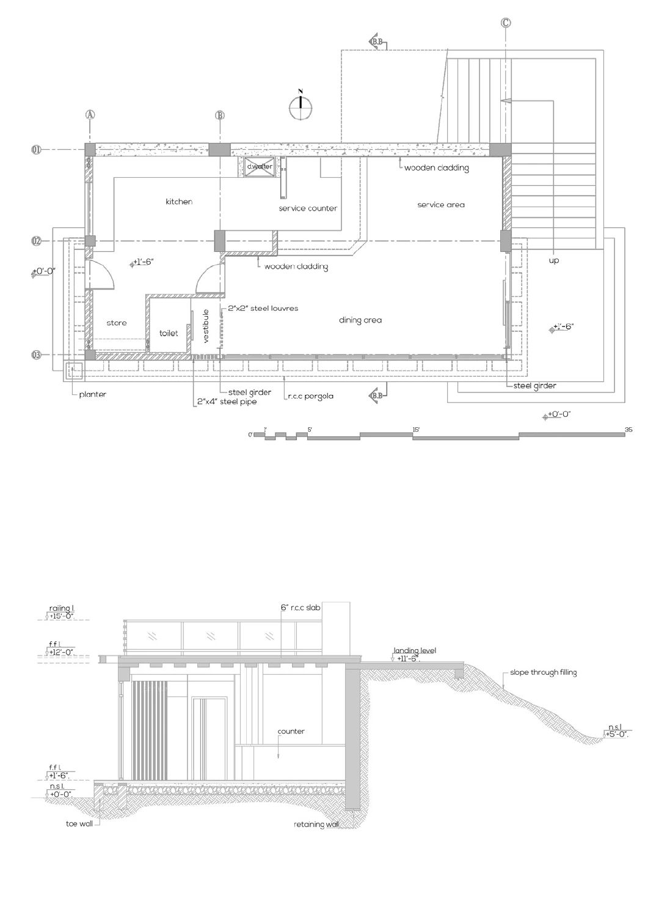

Berufspraxis · Gastronomie
Café at Hillpark
Das Café liegt am Hang oberhalb von Islamabad. Ein flaches Vordach bietet Schutz und rahmt den Blick über die Stadt.

- Ort
- Islamabad, Pakistan
- Büro
- Dar Architects
- Rolle
- Projektarchitekt · Phasen 3–5
Die Zeichnung
Der Schnitt zeigt die in den Hang eingebetteten Innenräume und das darüber hinausragende Vordach.

Zeichnung vergrößernDer Raum
Von der Terrasse öffnet sich der Blick über die Stadt. Vordach und Treppe folgen dem Geländeverlauf.